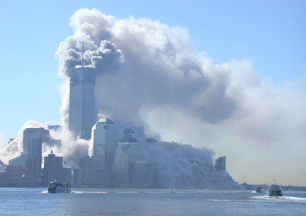

Marie-Josée Khayat, 13 Septembre 2001, 14h00
"In the City of God there will be a great thunder, Two brothers torn
apart by Chaos, while the fortress endures, the great leader will
succumb. The third big war will begin when the big city is burning"
Nostradamus 1654
Question: Comment Nostradamus mort en juillet 1566 a fait pour écrire
un texte en 1654 ?
Guy
